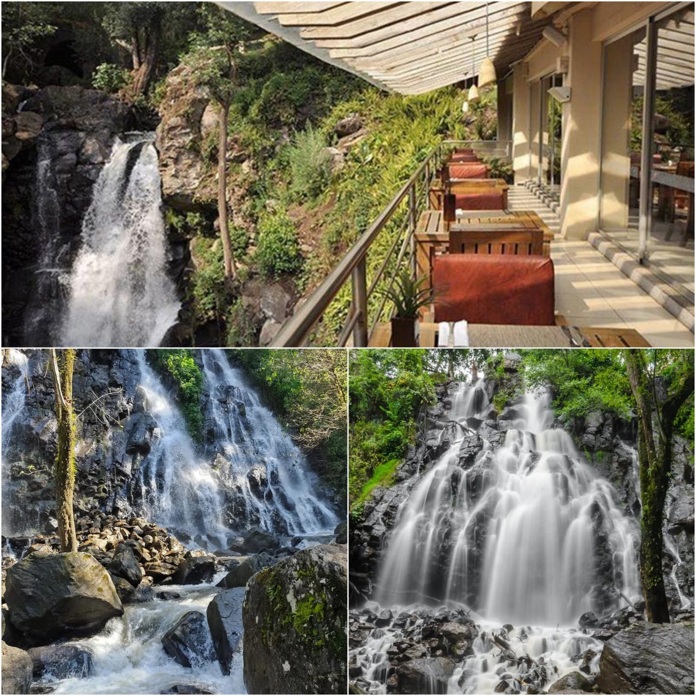

“Valle de Bravo, donde la naturaleza se convierte en magia y cada cascada cuenta una historia.”

CASCADA VELO DE NOVIA:Es uno de los atractivos naturales más conocidos de Valle de Bravo. Tiene una caída de agua de aproximadamente 35 metros de altura. Su nombre se debe a que el agua parece un velo blanco al descender. Está rodeada de árboles, vegetación y senderos donde se puede disfrutar de la naturaleza.
CASCADA PIEDRA DE MOLINO:También conocida como cascada del Molino, es un hermoso paraje natural donde el agua corre entre grandes rocas. Se encuentra rodeada de árboles como pinos y oyameles. Es un lugar ideal para disfrutar del aire fresco, escuchar el sonido del agua y contemplar el paisaje natural.
CASCADA REFUGIO DEL SALTO:Es una belleza natural de Valle de Bravo que cuenta con una caída de agua de aproximadamente 15 metros de altura. Para llegar se realiza una caminata de alrededor de 20 minutos por un sendero junto al río El Molino. Es un sitio rodeado de vegetación que permite apreciar la tranquilidad del bosque.